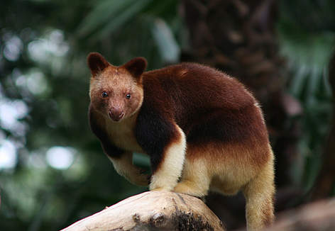
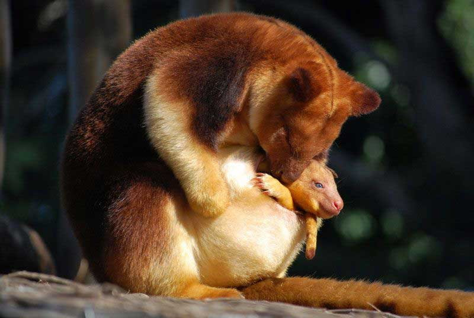
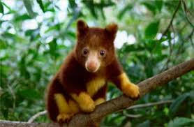
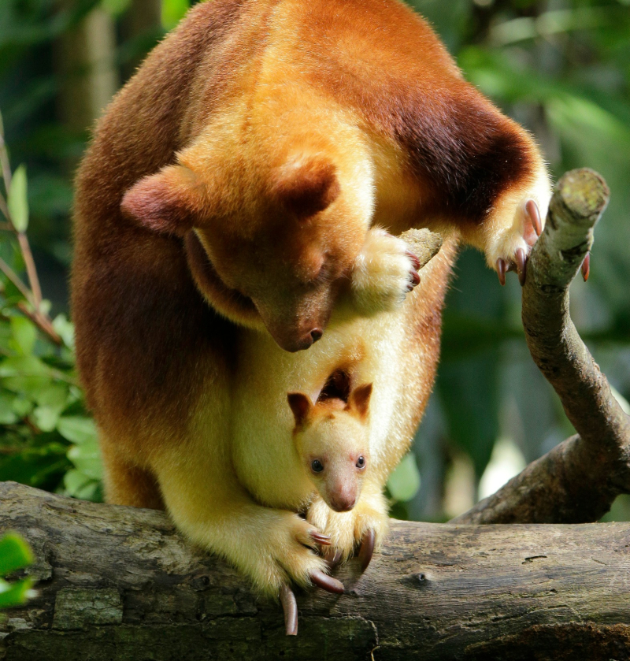
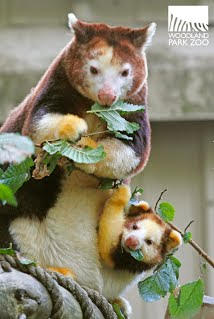
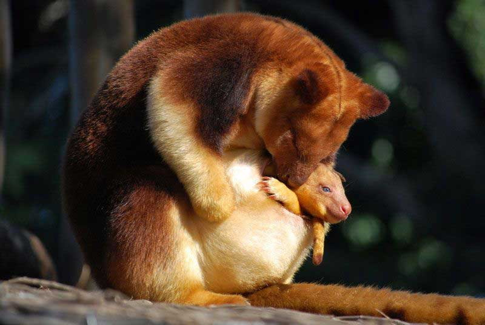
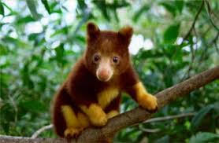
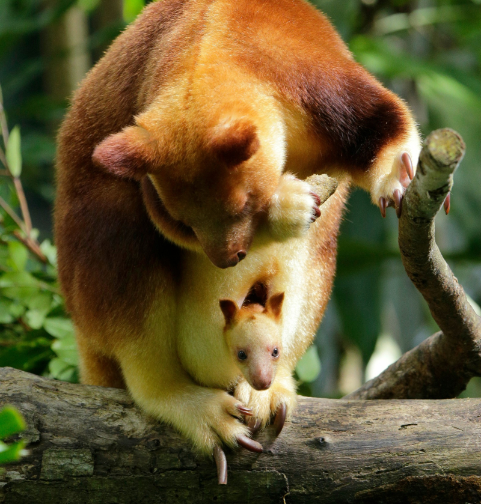
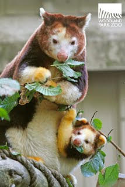

What is a Tree Kangaroo?
A tree Kangaroo may look a lot like regular kangaroos, but their arms and legs are about the same length. Their arms and legs are very strong, so that they can climb in the trees they live in. They are about 41-77 cm tall and they weigh up to 31 pounds., and have a tail that's as big as their body at 40-87 cm long! Thats a big tail!
Tree kangaroos Habitat
The tree Kangaroos usually live in the Montane tropical forest. These forest are in Indonesia, Papua New guinea, and Australia. To try and protect these areas WWF (world wildlife fund) is managing, and promoting protected areas, they are raising awareness of habitat loss and the effects of hunting.They are also reducing illegal hunting with the help of TRAFFIC, the wildlife trade monitoring system.
 







Endangerment
The tree kangaroos have suffered from a loss of habitat and uncontrolled hunting. People hunt the tree kangaroos for their own food. The forests are getting removed also, which is not helping. They are getting removed, and coffee, and rice fields are getting put in. Timber production, and lodging are also problems, with the decrease of the tropical forests.